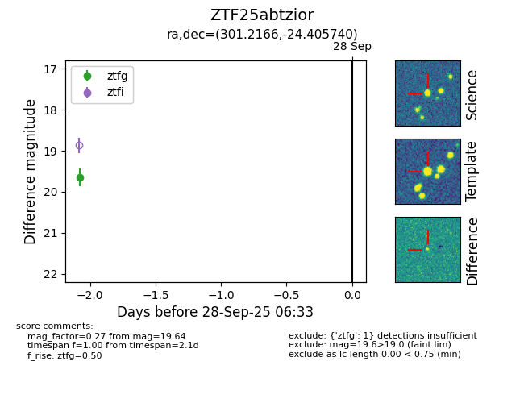

FINK: ZTF25abtzior
Lasair: ZTF25abtzior
ALeRCE: ZTF25abtzior
ZTF25abtzior (ztf,fink)
equatorial (ra, dec) = (301.2166,-24.40574)
galactic (l, b) = (17.5999,-26.33736)

last ztfg=19.64
1 ztfg detections